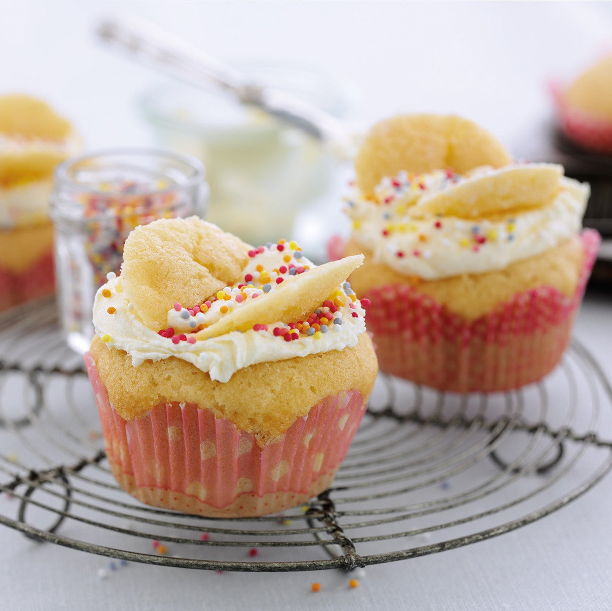

Fairy Cakes

Ingredients
- 125g Butter
- 125g Caster Sugar
- 1 Teaspoon Vanilla Extract
- 2 Eggs
- 150g Plain Flour
- 1/4 Teaspoon Baking Powder
- Icing Sugar/Icing
Method
- Preheat oven to 190°C. Line fairy cake tin with paper cases
- Cream the butter in a large bowl or in an electric food mixer until soft. Add the sugar and vanilla extract and beat until the mixture is light and fluffy.
- Add the eggs, one at time, beating continuously, then sift in the flour and baking powder.
- Divide the mixture evenly between the paper cases using two teaspoons for mini cakes or two dessertspoons for larger ones. Cook in the oven for 8-12 minutes, or until golden and springy to the touch. Transfer the cakes to a wire rack to cool.
- Adding the icing sugar or icing.